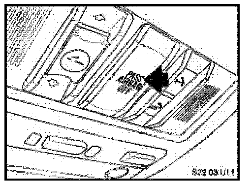
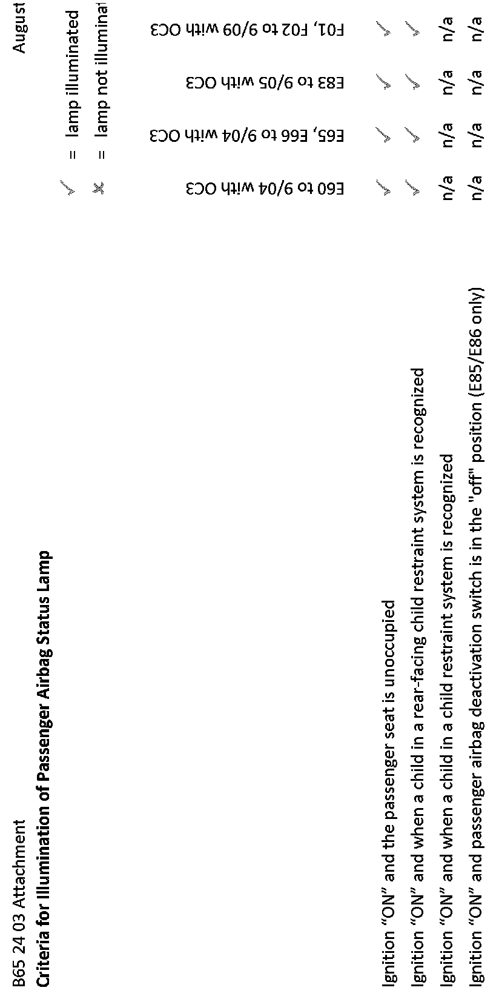

<!DOCTYPE html>
<html>
  <head>
    <title>Restraint System - Passenger Airbag Status Lamp Info. — 2007 BMW X3 3.0si (E83) L6-3.0L (N52K) Service Manual | Operation CHARM</title>
    <meta name='description' content="Detailed repair manual for the 2007 BMW X3 3.0si (E83) L6-3.0L (N52K).">
    <style>
      .li-folder {
	  list-style-image: url('/icons/folder.svg');
      }
      .li-folder.li-folder-open {
	  list-style-image: url('/icons/folder-open.svg');
      }
    </style>
    <link rel='stylesheet' href="../../../../../../style.css">
    <meta name='viewport' content='width=device-width, initial-scale=1.0' />
  </head>
  <body>
    <div class='theme-colors header'>
      <div class='branding'><b>Operation CHARM</b>: Car repair manuals for everyone.</div>
<div class=breadcrumbs><a class='breadcrumb-part' href="../../../../../../">Home</a> <b>&gt;&gt;</b> <a class='breadcrumb-part' href="../../../../../../BMW/">BMW</a> <b>&gt;&gt;</b> <a class='breadcrumb-part' href="../../../../../../BMW/2007/">2007</a> <b>&gt;&gt;</b> <a class='breadcrumb-part' href="../../../../../../index.html">X3 3.0si (E83) L6-3.0L (N52K)</a> <b>&gt;&gt;</b> <a class='breadcrumb-part' href="../../../../../../Repair%2520and%2520Diagnosis/index.html">Repair and Diagnosis</a> <b>&gt;&gt;</b> <a class='breadcrumb-part' href="../../../../../../Repair%2520and%2520Diagnosis/index.html#Instrument%20Panel%2C%20Gauges%20and%20Warning%20Indicators/">Instrument Panel, Gauges and Warning Indicators</a> <b>&gt;&gt;</b> <a class='breadcrumb-part' href="../../../../../../Repair%2520and%2520Diagnosis/index.html#Instrument%20Panel%2C%20Gauges%20and%20Warning%20Indicators/Dashboard%20%2F%20Instrument%20Panel/">Dashboard / Instrument Panel</a> <b>&gt;&gt;</b> <a class='breadcrumb-part' href="../../../../../../Repair%2520and%2520Diagnosis/Instrument%2520Panel%252C%2520Gauges%2520and%2520Warning%2520Indicators/Dashboard%2520%252F%2520Instrument%2520Panel/Air%2520Bag%2528s%2529%2520Arming%2520and%2520Disarming/index.html">Air Bag(s) Arming and Disarming</a> <b>&gt;&gt;</b> <a class='breadcrumb-part' href="../../../../../../Repair%2520and%2520Diagnosis/Instrument%2520Panel%252C%2520Gauges%2520and%2520Warning%2520Indicators/Dashboard%2520%252F%2520Instrument%2520Panel/Air%2520Bag%2528s%2529%2520Arming%2520and%2520Disarming/Technical%2520Service%2520Bulletins/index.html">Technical Service Bulletins</a> <b>&gt;&gt;</b> <a class='breadcrumb-part' href="../../../../../../Repair%2520and%2520Diagnosis/Instrument%2520Panel%252C%2520Gauges%2520and%2520Warning%2520Indicators/Dashboard%2520%252F%2520Instrument%2520Panel/Air%2520Bag%2528s%2529%2520Arming%2520and%2520Disarming/Technical%2520Service%2520Bulletins/Restraint%2520System%2520-%2520Passenger%2520Airbag%2520Status%2520Lamp%2520Info./index.html">Restraint System - Passenger Airbag Status Lamp Info.</a></div></div>
<div class='main'>
<h1>Restraint System - Passenger Airbag Status Lamp Info.</h1>SI B 65 24 03<br>Audio, Navigation, Monitors, Alarms, SRS<br><br>August 2010<br>Technical Service<br><br>This Service Information bulletin supersedes SI B65 24 03 dated November 2006.<br><br>[NEW] designates changes to this revision<br><br>SUBJECT<br>Passenger Airbag Status Lamp<br><br>MODELS<br>All models with a Passenger Airbag Status Lamp<br><br>INFORMATION<br><br>This bulletin is intended to address customer questions you may receive regarding operation of the Passenger Airbag Status Lamp, once the customer has consulted the Owner's Manual.<br><br>The Passenger Airbag Status Lamp is installed to meet a National Highway Traffic Safety Administration (NHTSA) regulation and, except for in the Z4, is located in the headliner near the interior light (the E60 installation is shown in the illustration). On the Z4, the status lamp is located on the center console.<br><br><div class='oxe-image'></div><br><br><br><br>The Passenger Airbag Status Lamp illuminates to show that the front passenger airbag is OFF (not active).<br><br>[NEW] For an overview by vehicle, refer to the attachment "POL matrix"<br><br><b>[NEW] For E60, E65 and E66 to 9/04; E83 to 9/05; E85 to 10/04; and F01 and F02 to 9/09 with the 0C3 (pressure-sensing) occupancy mat, the lamp is illuminated:</b><br><br>^<span class='indent-2'>&#09;</span>With the ignition in the "ON" position AND the passenger seat unoccupied<br><br>^<span class='indent-2'>&#09;</span>With the ignition in the "ON" position AND when a child in a rear-facing child restraint system is recognized<br><br>^<span class='indent-2'>&#09;</span>[NEW] With the ignition in the "ON" position AND the passenger airbag deactivation switch in the "OFF" position (E85 only).<br><br>The lamp illuminates briefly during start-up and stays illuminated if a child in a rear-facing child restraint system is recognized or if the passenger seat is unoccupied. The lamp goes out if an adult or a child of sufficient size is recognized.<br><br>[NEW] For all vehicles with the 0C3 (pressure-sensing) occupancy mat except those stated above, the lamp is illuminated:<br><br>^<span class='indent-2'>&#09;</span>With the ignition in the "ON" position AND when a child in a rear-facing child restraint system is recognized<br><br>^<span class='indent-2'>&#09;</span>With the ignition in the "ON" position AND the passenger airbag deactivation switch in the "OFF" position (E85 and E86 only).<br><br>The lamp illuminates briefly during start-up and stays illuminated if a child in a rear-facing child restraint system is recognized. The lamp goes out if an adult or a child of sufficient size is recognized, or if the passenger seat is unoccupied.<br><br>[NEW] For all vehicles with the CIS (capacitive-sensing) occupancy mat, the lamp is illuminated:<br><br>^<span class='indent-2'>&#09;</span>With the ignition in the "ON" position AND the passenger seat unoccupied<br><br>^<span class='indent-2'>&#09;</span>[NEW] With the ignition in the "ON" position AND when a child in a child restraint system is recognized.<br><br>The lamp illuminates briefly during start-up and stays illuminated if a child in a child restraint system is recognized. The lamp goes out if the passenger seat is occupied, regardless of the size of the individual (no child restraint system).<br><br>WARRANTY INFORMATION<br><br>For information only<br><br>ATTACHMENTS<br><br><h3>��N:</h3><div class='oxe-image'></div><br><br><br><br>view PDF attachment<br><br><br><br></div>
<div class="theme-colors footer">
  <i>pro multis</i> · <a href="/about.html">About Operation CHARM</a>
</div>
<script>const baseUrl="/"</script>
<script src="../../../../../../script.js"></script>
</body>
</html>
